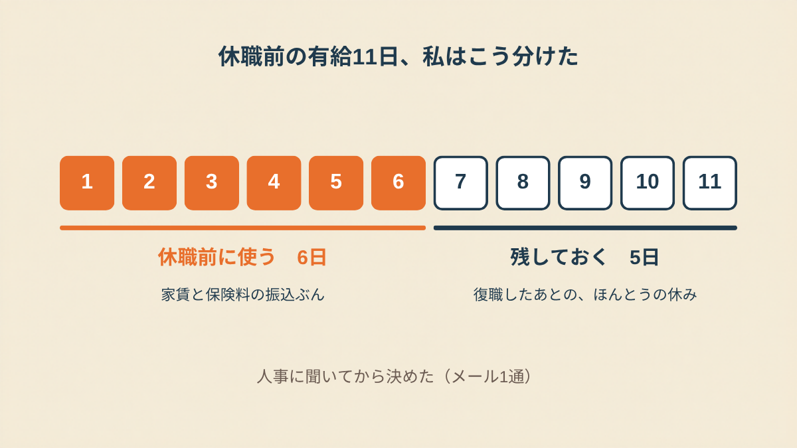
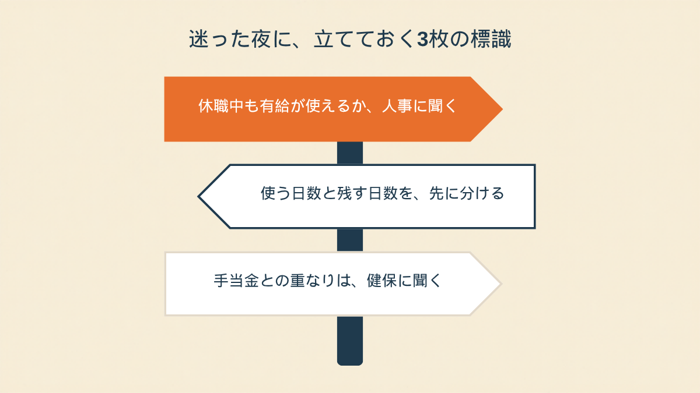

読んだ瞬間、まず思ったのは、全部使ったら、辞める気だと思われるんじゃないか、ってことだった。
休職が決まった週、人事から一通のメールが来た
33歳、経理。
診断書を出して、休職が決まったのは月曜でした。
その週の木曜の夜。
人事の担当者から、短いメールが来ました。
「休職期間中は有給休暇が使えない取り扱いになります。残日数が11日ありますので、休職前に消化されますか？ ご希望があれば今週中にご連絡ください」
親切なメールなんです。
たぶん、ありがたい連絡。
でも、画面を見たまま、30分くらい動けなかった。
全部使うと、辞める準備に見えるかもしれない
頭の中で、計算が始まりました。
11日。日割りにすると、手取りで10万円くらい。
家賃と、保険料と、傷病手当金が入るまでの空白を考えたら、喉から手が出るほど欲しいお金でした。
でも、全部使い切ったら。
「あいつ、有給を残さずに消化していったな」
「戻ってくる気、ないんだな」
そう思われるんじゃないか、っていう考えが、ぐるぐるして止まらなかった。
誰も、そんなこと言ってないんです。
人事のメールには、むしろ「先に消化しますか？」と書いてある。
それでも、勝手に、疑われてる気がしてた。
「有給って、全部使うと『もう来ないんだ』って顔をされる、みたいな空気がずっとあったんです。実際に言われたことはないのに。休職の前の週は、その空気を勝手に自分で背負って、残す日数を3回くらい変えました。結局、10日全部は使いませんでした。後悔はしてないけど、あの数日、お金のことより『どう見られるか』のほうがしんどかった」
上司に聞けないまま、夜が2回過ぎた
メールの返信期限は「今週中」。
金曜の夕方までに返さなきゃいけない。
上司に相談しようかとも思いました。
でも、休職に入る人間が「有給の使い方、どう見えますか」なんて聞くのも、なんか違う気がして。
LINEの画面を開いては、閉じた。
夜中の1時に、検索もしました。
「休職 有給 全部使う」「休職前 有給 残す べき」
出てきたのは、「全部使っていい」「いや、残したほうがいい」「会社による」。
どれも正しそうで、どれも決め手にならなかった。
結局、人事に聞いてみたらこうだった
金曜の昼、返事を書きました。
上司じゃなくて、人事に。
「有給の使い方で、休職や復職の扱いが変わることはありますか。変わらないのであれば、半分くらいは先に使い、残りは復職後に使えるよう残したいです」
返信は、1時間くらいで来ました。
「有給の使い方で、休職・復職の扱いが変わることはありません。休職に入ると使えないので、残した日数は復職後に使えます」
あ、そうなのか、と。
それだけのことに、2日かかった。
6日、休職前に使いました。
家賃と保険料の振込ぶん、ということにして。
5日は残した。復職したあとの、ちゃんとした休みのために。

「うちは休職前に有給を全部使ったんですけど、特に何も言われませんでした。ただ、傷病手当金の申請のとき、『有給で給料が出た日は手当金は出ない』って健保から言われて、日付の確認が必要で。有給をどう使うかと、手当金の日付がぶつからないかは、先に聞いておけばよかったなって思ってます」
もちろん、会社によって違います。
休職中でも有給が使える会社があるかもしれないし、「全部消化してから休職して」と言われる会社もあるかもしれない。
私のところはたまたま、人事が1時間で答えてくれた。
ただ、あの2日間、お金の悩みと「どう見られるか」の悩みが、完全に一つに混ざってた。
人事に聞いたら、混ざってたものが、ほどけました。
「戻る気がある・ない」と「有給を何日使う」は、別の話だった。

この記事に、聞いてみたいことはありますか？
「自分の場合はどうなんだろう」と思ったことを、気軽に書いてみてください。いただいた質問は個別にお返事したうえで、匿名で記事にすることがあります。